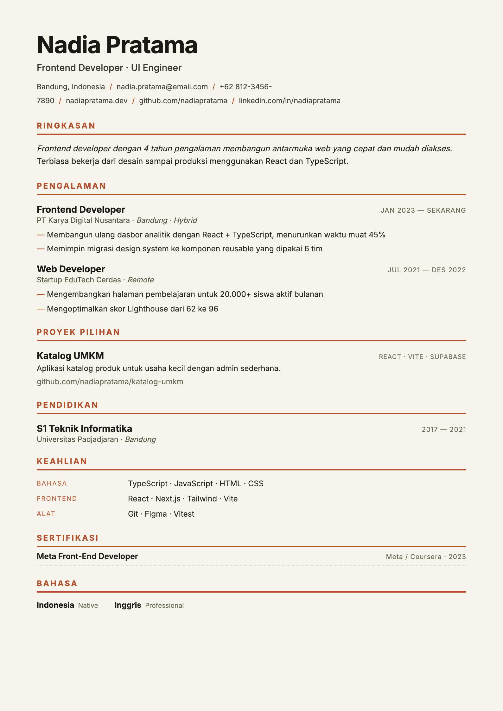

Banyak lamaran ditolak sistem ATS sebelum dilihat manusia. ResumeKita membuat CV ramah-ATS — rapi, profesional, dan mudah dibaca mesin — langsung di browser. Pilih template, isi form, unduh PDF.

✓ ATS-friendlyATS (Applicant Tracking System) adalah software yang memindai CV secara otomatis. CV penuh kolom, tabel, foto, dan ikon sering gagal terbaca — dan langsung tersingkir sebelum sampai ke rekruter.
Satu kolom, judul seksi standar, dan teks asli — jadi setiap kata terurai rapi oleh ATS.
Ini CV ATS, bukan CV desain. Tanpa foto, grafik, atau dua kolom yang membingungkan pemindai.
Semua diproses di perangkatmu. Tidak ada server, tidak ada login, tidak ada biaya.
Beda tipografi dan tata letak, tapi semuanya satu kolom dengan teks asli. Ganti kapan saja — isian tetap aman.
Generator surat lamaran serasi CV — otomatis pakai data dirimu.
Ganti seluruh label CV & surat antara Indonesia dan Inggris sekali klik.
Developer, Marketing, Guru, Admin, HSE, Fresh Graduate — tinggal ubah.
Tersimpan otomatis di perangkat + ekspor/impor JSON untuk lanjut nanti.
Mulai dari template favoritmu, atau muat contoh sesuai profesimu.
Ketik datamu; pratinjau A4 mengikuti seketika, lengkap penghitung halaman.
Klik unduh → simpan sebagai PDF. Teksnya asli, siap dibaca ATS & manusia.
Gratis, cepat, dan privat. Mulai sekarang — tidak perlu daftar.
Buat CV Sekarang